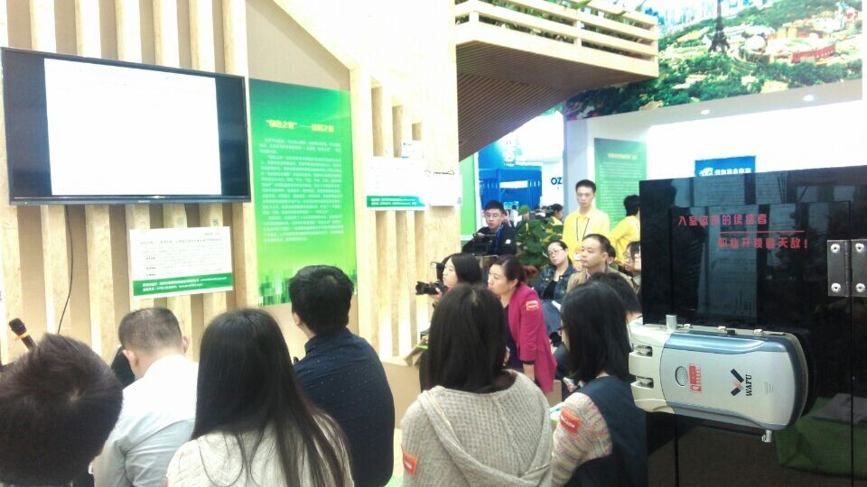

A Feira de Alta Tecnologia de Shenzhen foi oficialmente inaugurada no Centro de Convenções e Exposições de Shenzhen, com o tema “Desenvolvimento impulsionado pela inovação e aceleração do crescimento verde”. O evento apresentou as mais recentes tecnologias inteligentes, inovações de alto nível e produtos ecológicos, destacando a forte integração entre tecnologia inteligente e desenvolvimento sustentável.

Expandindo a visão e fortalecendo a colaboração no setor
A WAFU participou na exposição deste ano com o objetivo de ampliar a sua visão, explorar novas ideias, aprender com empresas avançadas e fortalecer a cooperação. A empresa interagiu ativamente com clientes e distribuidores visitantes, discutindo características dos produtos, necessidades do mercado e potenciais parcerias. Essas interações ajudaram a aumentar a visibilidade e a influência da marca WAFU no setor de segurança inteligente.
Através da exposição, a WAFU também obteve informações valiosas sobre os pontos fortes das empresas líderes, permitindo à equipa aperfeiçoar ainda mais a sua estrutura de produtos e continuar a aproveitar as suas vantagens tecnológicas.
Demonstrações ao vivo de fechaduras invisíveis com controlo remoto
No stand da exposição, a equipa técnica da WAFU forneceu explicações detalhadas e demonstrações ao vivo para cada visitante. Os produtos apresentados incluíam fechaduras invisíveis com controlo remoto, fechaduras inteligentes antirroubo, fechaduras controladas por telefone e fechaduras inteligentes integradas com impressão digital, palavra-passe, controlo remoto e cartão.
Os visitantes demonstraram grande interesse na série de fechaduras invisíveis com controlo remoto da WAFU, elogiando o design oculto, as funcionalidades avançadas de segurança e a operação intuitiva. A equipa manteve conversas aprofundadas com os clientes, recebendo comentários altamente positivos e amplo reconhecimento.
Fechadura invisível com controlo remoto de sistema duplo aprimorada
Um dos destaques da exposição foi a fechadura invisível antirroubo com controlo remoto aprimorada da WAFU, que apresenta um design de sistema duplo e PCB duplo. Como uma versão melhorada do modelo anterior, esta fechadura lidera o setor tanto em funcionalidade como em aparência. A sua estrutura inovadora e desempenho otimizado deixaram uma forte impressão em visitantes e profissionais da indústria.
Perspetivas futuras: inovação contínua e crescimento
A exposição foi uma experiência gratificante para a WAFU, proporcionando reconhecimento e reflexão. Embora a empresa tenha ganho grande visibilidade, também identificou áreas de melhoria em comparação com outros fabricantes líderes. No futuro, a WAFU continuará a adotar tecnologias avançadas, atrair talentos de alto nível e fortalecer a sua rede de vendas.
Com inovação contínua e dedicação, a WAFU pretende alcançar novos avanços no campo das fechaduras invisíveis residenciais e soluções de segurança inteligente.